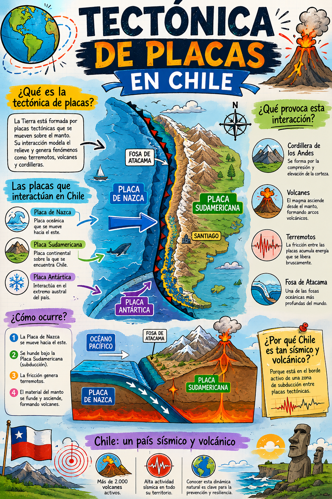

La Tierra en Movimiento
Descubre cómo nuestro planeta se transforma constantemente a través de la Deriva Continental y la Tectónica de Placas, dos teorías que revolucionaron la geología.
Descubre cómo nuestro planeta se transforma constantemente a través de la Deriva Continental y la Tectónica de Placas, dos teorías que revolucionaron la geología.
Propuesta por Alfred Wegener en 1912, esta teoría sostenía que los continentes actuales estuvieron unidos en el pasado en un único supercontinente llamado Pangea.
Wegener aportó pruebas contundentes:
Surgida en la década de 1960, es la evolución científica de la deriva continental. Explica que la capa externa de la Tierra (litosfera) está fragmentada como un rompecabezas en grandes bloques llamados placas tectónicas.
Estas placas flotan y se mueven sobre la astenosfera (una capa de roca pastosa y caliente) debido a las corrientes de convección del manto terrestre.
Las interacciones en los bordes de las placas provocan los fenómenos geológicos más drásticos de la Tierra:
